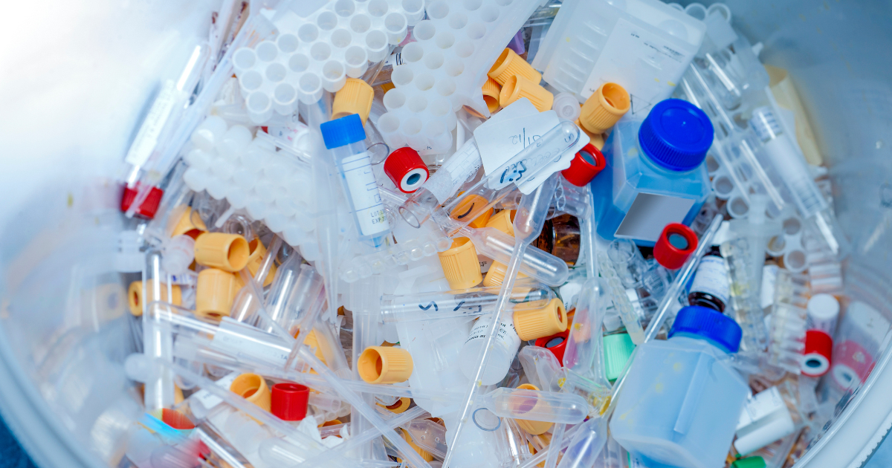
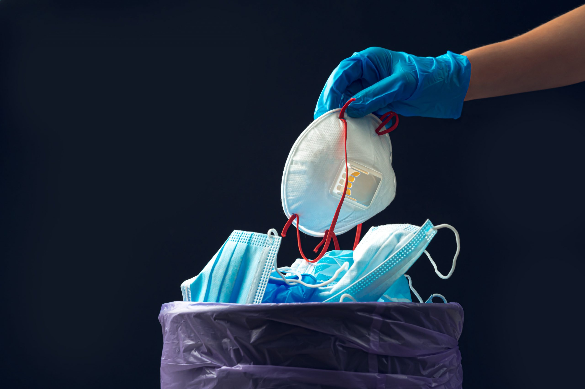

Medical Waste Management

What is Medical Waste?
Medical waste includes syringes, gloves, expired medicines, and biological waste from hospitals and clinics. Proper disposal prevents infections and environmental hazards.

How is Medical Waste Managed?
- Segregation of infectious, hazardous, and general waste.
- Proper packaging and labeling.
- Incineration and chemical disinfection.
- Safe disposal and recycling where possible.
Why Proper Medical Waste Disposal Matters?
Incorrect disposal can spread infections, contaminate water sources, and harm wildlife. Proper handling ensures safety and hygiene.
Medical Waste Management Companies in Nepal

Waste Service
Specialized in medical waste collection, treatment, and safe disposal.

Reclaim Nepal
Focuses on sustainable and eco-friendly hospital waste management.

Health Care Foundation Nepal (HECAF)
Experts in incineration and biological waste treatment.